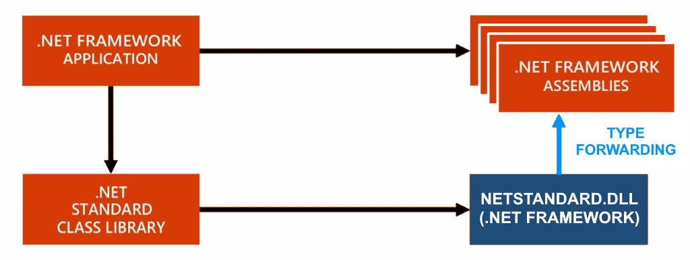
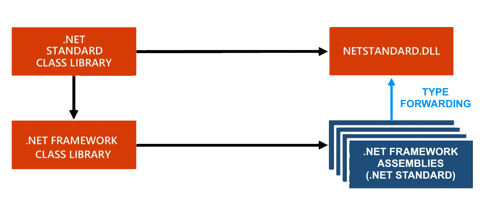
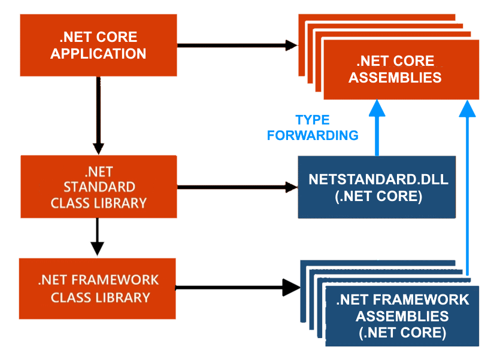
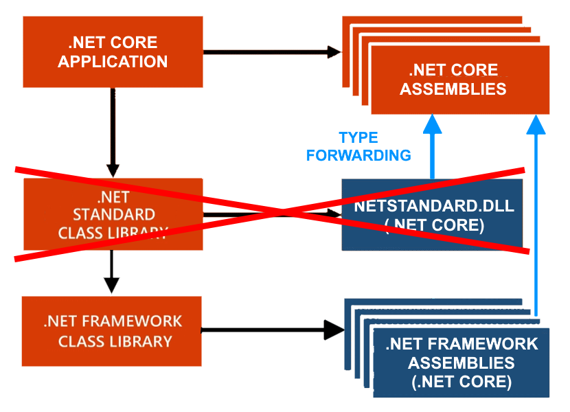
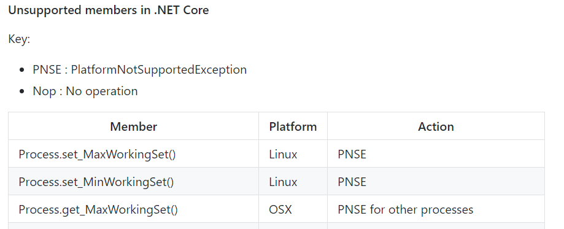

What is .NET Standard?
It ain't your father's .NET!
Adam Ralph
adam@adamralph.com · @adamralph (Twitter, GitHub, etc.)
NuGet packages
| FakeItEasy | .NET Standard 1.6 |
| LiteGuard | .NET Standard 1.0 |
| xBehave.net (beta) | .NET Standard 1.0 |
| NServiceBus.RabbitMQ (beta) | .NET Standard 2.0 |
.NET Standard?
¯\_(ツ)_/¯
.NET Framework (and Mono)
Windows, Windows Server (and MacOS and Linux)
.NET Core
Windows, Windows Server, Linux, MacOS, Tizen
Xamarin.iOS, Xamarin.Mac
iPhone, iPad, MacOS (GUI)
Xamarin.Android
All the things!
UWP
Windows 10, Windows 10 Mobile, Xbox One, Hololens
Portable Class Libraries
The Portable Class Library Fiasco
fiasco!
| .NET Standard | 1.0 | 1.1 | 1.2 | 1.3 | 1.4 | 1.5 | 1.6 | 2.0 |
|---|---|---|---|---|---|---|---|---|
| .NET Core | 1.0 | 1.0 | 1.0 | 1.0 | 1.0 | 1.0 | 1.0 | 2.0 |
| .NET Framework | 4.5 | 4.5 | 4.5.1 | 4.6 | 4.6.1 | 4.6.1 | 4.6.1 | 4.6.1 |
| Mono | 4.6 | 4.6 | 4.6 | 4.6 | 4.6 | 4.6 | 4.6 | 5.4 |
| Xamarin.iOS | 10.0 | 10.0 | 10.0 | 10.0 | 10.0 | 10.0 | 10.0 | 10.14 |
| Xamarin.Mac | 3.0 | 3.0 | 3.0 | 3.0 | 3.0 | 3.0 | 3.0 | 3.8 |
| Xamarin.Android | 7.0 | 7.0 | 7.0 | 7.0 | 7.0 | 7.0 | 7.0 | 8.0 |
| UWP | 10.0 | 10.0 | 10.0 | 10.0 | 10.0 | vNext | vNext | vNext |
| Windows | 8.0 | 8.0 | 8.1 | |||||
| Windows Phone | 8.1 | 8.1 | 8.1 | |||||
| Windows Phone Silverlight | 8.0 |
github.com/dotnet/standard/blob/master/docs/versions/netstandard1.4_diff.md
Package
Immo Landwerth @terrajobst
Application
Immo Landwerth @terrajobst
| .NET Standard | 1.0 | 1.1 | 1.2 | 1.3 | 1.4 | 1.5 | 1.6 | 2.0 |
|---|---|---|---|---|---|---|---|---|
| .NET Core | 1.0 | 1.0 | 1.0 | 1.0 | 1.0 | 1.0 | 1.0 | 2.0 |
| .NET Framework | 4.5 | 4.5 | 4.5.1 | 4.6 | 4.6.1 | 4.6.1 | 4.6.1 | 4.6.1 |
| Mono | 4.6 | 4.6 | 4.6 | 4.6 | 4.6 | 4.6 | 4.6 | 5.4 |
| Xamarin.iOS | 10.0 | 10.0 | 10.0 | 10.0 | 10.0 | 10.0 | 10.0 | 10.14 |
| Xamarin.Mac | 3.0 | 3.0 | 3.0 | 3.0 | 3.0 | 3.0 | 3.0 | 3.8 |
| Xamarin.Android | 7.0 | 7.0 | 7.0 | 7.0 | 7.0 | 7.0 | 7.0 | 8.0 |
| UWP | 10.0 | 10.0 | 10.0 | 10.0 | 10.0 | vNext | vNext | vNext |
| Windows | 8.0 | 8.0 | 8.1 | |||||
| Windows Phone | 8.1 | 8.1 | 8.1 | |||||
| Windows Phone Silverlight | 8.0 |
.NET Standard 1.x
Limitations
Paralysis
github.com/dotnet/standard/blob/master/docs/versions/netstandard1.4_diff.md
.NET Standard 1.6 → 2.0 diff
github.com/dotnet/standard/blob/master/docs/versions/netstandard2.0_diff.md
.NET Standard 1.x → 2.0
Limitations ✓
Paralysis
FakeItEasy
→ Castle.Core
NServiceBus.Rabbit
→ NServiceBus
→ RabbitMQ.Client
NServiceBus
→ Autofac
→ Newtonsoft.Json
Reference anything!
Package
Immo Landwerth @terrajobst
Application
Application
Works on my machine!
github.com/dotnet/corefx/wiki/ApiCompat
Try it
.NET Core 2.0
Visual Studio 2017 15.3.x
Visual Studio for Mac 7.1.x
Visual Studio Code + C# Extension
Try it
github.com/adamralph/netstandard-magic
github.com/adamralph/netcore-magic
github.com/adamralph/no-magic
.NET Standard 1.x → 2.0
Limitations ✓
Paralysis ✓
.NET Standard 2.0
Moar APIs!
Reference anything!*
Port my package
Check compatibility
github.com/Microsoft/dotnet-apiport
| Assembly | Target | .NET FX 4.5.2 | .NET Std 1.6 | .NET Std 2.0 |
|---|---|---|---|---|
| NServiceBus.Core | .NET FX 4.5.2 | 100% | 66% | 87% |
What do I do?
Change
Separate
Remove
APIS and versions
apisof.net

.NET Standard / .NET Core?
¯\_(ツ)_/¯
| Milestone | Release Date |
|---|---|
| .NET Standard 2.0 Preview | Q2 2017 (11th May!) |
| .NET Standard 2.0 | Q3 2017 (14th August!) |
| Milestone | Release Date |
|---|---|
| .NET Core & Standard 2.0 Preview | Q2 2017 (11th May!) |
| .NET Core & Standard 2.0 | Q3 2017 (14th August!) |
| UWP 6.0 (.NET Standard 2.0) | Q4 2017 |
| .NET Core 2.1 Preview | Q4 2017 |
| .NET Core 2.1 | Q1 2018 |
.NET Standard 2.1, 2.2, 3.0?
How did I do?
docs.particular.net/tutorials/intro-to-nservicebus
particular.net/s/net-core-signup
What is .NET Standard?
It ain't your father's .NET!
Adam Ralph
adam@adamralph.com · @adamralph (Twitter, GitHub, etc.)
@adamralph